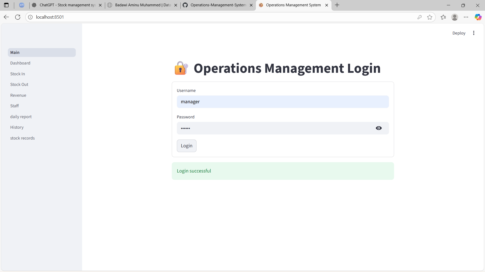
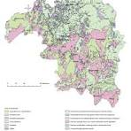

Program Lead Name
Training Facilitator / Coordinator
In 2025, I served as a Training Facilitator in a cross-sector Data Science and Artificial Intelligence capacity development programme delivered in Zamfara State and Kano State.
Back To ProgramsThe initiative was designed to equip fresh graduates with applied, field-based competencies in data analytics and AI, with direct relevance to health systems, agriculture value chains, commerce, and education management.
The programme prioritised practical implementation over theoretical instruction, integrating real-world data collection, structured analysis, and evidence-driven project development.
To build decentralised technical capacity in data science and AI by enabling graduates to:
Participants conducted supervised primary data collection across multiple real-world environments:
Trainees were guided through:
This approach ensured methodological rigour and contextual integrity.
Following data acquisition, participants implemented structured analytical pipelines, including:
AI-assisted tools were introduced to enhance predictive insights, anomaly detection, and decision-support modelling within sectoral contexts.
The programme emphasised converting analytical output into structured recommendations.
Participants developed sector-focused projects that included:
Each project culminated in formal presentations demonstrating:
The programme successfully bridged theoretical data science training with applied, community-relevant intelligence generation.
Key impacts included:
This initiative demonstrated the effectiveness of field-driven data science training in building sustainable technical capacity and fostering evidence-based decision-making at regional levels.



Replace each placeholder link with your uploaded evidence files.
Training Facilitator / Coordinator
Institutional Partner
Data Project Team Representative